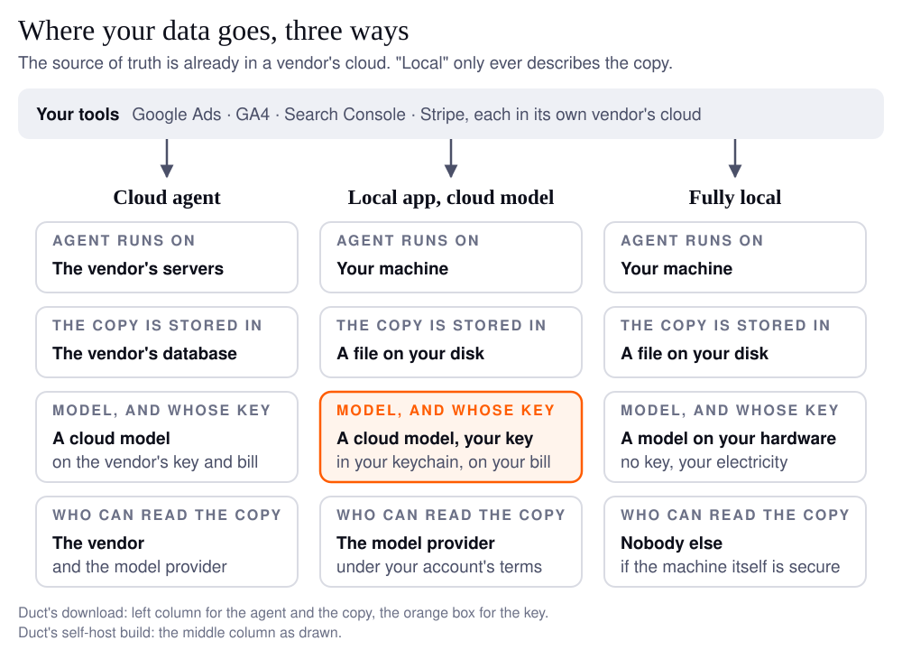

A local AI agent is one whose program runs on your own computer instead of a vendor's server. That tells you where the software runs, and nothing else. For a business the questions that matter are three: where is my data read, where is the copy stored afterwards, and which model reads it, under whose key. A product can be "local" on one of those and cloud on the other two.
I know this because I got it wrong on my own website, twice. Duct ships as a desktop app, and two separate pages (a changelog entry and a section of the privacy policy) described it as keeping your data on your machine. That sentence was true of a build I make for people who want to self-host the whole thing, which weighs 400 to 500 MB and almost nobody runs. It was false of the one on the download page, which is a shell of tens of megabytes that talks to my servers. The paragraph that now sits at the top of the site's instructions file exists so that an agent writing copy cannot make that mistake a third time.
This is the guide I needed before I wrote those pages.
What is a local AI agent?
An agent is a program that reads things, decides what to do next, and acts; a local one runs that program on your hardware. Three separate pieces can each be local or not:
- The agent program, the loop that fetches your data, asks a model what it means, and calls tools. This is the piece people usually mean.
- The model, the thing that does the reasoning. It can run on your machine (an open-weights model through a tool like LocalAI, 50,000 stars on GitHub, "No GPU required") or in a provider's cloud.
- The copy of your data, what the agent fetched, the briefs it wrote, what it remembers about your business. This lands in a database somewhere, and that somewhere is the question nobody asks.
Fully local means all three on your machine. An October 2026 comparison by iTechGuides puts the catch well: local inference "does not guarantee an entirely local workflow." The common shape in practice is the hybrid, where the program and the copy stay on your laptop and the model is a cloud API you pay for with your own key.
If your work is marketing, the source of truth is already in someone else's cloud. Google Ads, GA4, Search Console, Stripe and Meta hold the originals. No agent, however local, changes that. What "local" can protect is the copy the agent makes and the conclusions it draws from it.

Cloud, self-hosted or local: which one are you being sold?
Most "local" agents are the middle column, and that is fine, as long as you know which column you bought. The same four questions, three answers each.
| Cloud agent | Self-hosted | Local desktop app, your own key | |
|---|---|---|---|
| Where the agent runs | the vendor's servers | a server you operate | your laptop |
| Where your data is read | the vendor fetches it from Google, Stripe and the rest | your server fetches it | your laptop fetches it |
| Where the copy is stored | the vendor's database | your database | a file on your disk |
| Who holds the model key | the vendor | you | you, in the OS keychain |
| Who pays the model | the vendor, built into the price | you, per token | you, per token |
| What the vendor can see | everything the agent read and wrote | nothing, unless you send telemetry | nothing, unless you send telemetry |
| What you need | an account | a machine that stays on, and someone to run it | an app and an API key |
Self-hosted and local are the same privacy promise with a different operations bill. Self-hosting means a machine that is always on and someone who patches it. A local desktop app means it only works while your laptop is open, which for a weekly growth brief is a feature and for a daily alert is not.
Does bring your own key mean the vendor can't see my data?
No. Your own key settles who pays and whose terms cover the model, not who sees the prompt. Two products that both say "bring your own key" are honest about this in opposite directions.
Cursor's page on API keys says "Your API key is not stored on our servers," and in the same breath that "all requests are routed through Cursor's servers for final prompt building." The key is yours; the prompt still passes through them, and "Cursor's Zero Data Retention policy does not apply when you use your own API keys." BoltAI's page says "BoltAI stores your OpenAI API key securely in Apple Keychain" and "There is no intermediate server." Same three words on the box, a different data path inside.
What your own key does change is which contract governs the model side. On the API, OpenAI's data controls page says "data sent to the OpenAI API is not used to train or improve OpenAI models," with abuse-monitoring logs "retained for up to 30 days" and zero data retention "subject to prior approval by OpenAI." Anthropic's privacy center says "we automatically delete inputs and outputs on our backend within 30 days of receipt or generation," unless you have a zero data retention agreement. Those terms attach to your account, not the agent vendor's, which is the point of holding the key.
So the question to ask is not "do you store my key" but "does my prompt touch your server on the way to the model." The answer tells you which column you are in.
Where does Duct put your data?
The download is a cloud agent with your key in the keychain; the self-host build is the local one. Both are the same code, and the difference is one entry in the build config that decides whether the backend ships inside the app. The desktop README keeps the table I should have written before the privacy page:
| Official download | Self-host build | |
|---|---|---|
| Inside the app | the native shell, tens of megabytes | the shell plus the whole backend, 400 to 500 MB |
| Where the agent runs | Duct's hosted servers | a backend process on your machine, loopback only |
| Where your connected data is read | Duct's servers fetch it from Google, Stripe and the rest | your machine fetches it |
| Where the copy is stored | Duct's database: briefs, memory, and your connector authorizations, encrypted | a SQLite file in your user data folder |
| Your model key | your OS keychain; sent with each request, held for that request, then discarded | your OS keychain; handed to the process on the same machine |
| Prompts and agent code | on Duct's servers | on your disk, every file |
| What Duct's servers see | what the agent read and wrote for you | nothing |
| What the app reports | crashes, if you leave that switch on; no analytics tag at all | nothing is compiled in |
| Safe to say | "your key is never stored unless you save it" | "nothing leaves your machine" |
The key row is the one I am proud of. The web app's key module sends your key as a request header, and the desktop shell switches off the "remember this key" option the browser version offers, so there is no path by which the download stores it on my side. The engine rule runs the other way too: the server's own key is never spent on your behalf. The full map of every secret, including the one that is still weaker than it should be, is in the credential storage reference.
And the limit, before anyone comments it: the build that keeps everything on your machine is the one almost nobody runs. It needs you to build it yourself with your own Google sign-in client, and the hosted one is the one I can support. If "nothing leaves your machine" is your requirement, you want the self-host build or a fully local stack, and you should hold me to the second column, not the first.
What does a local agent cost to run?
With your own key the model bill is yours, and it scales with how often the agent runs and which model it picks, not with the number of seats. That is the trade: the vendor stops paying for inference, and you stop paying for the seats of people who open the app twice a month.
Two things keep it small. First, the agent should route work by weight. Duct's tier map sends analysis and audits to a heavy model, synthesis and chat to a standard one, and research to a light one, so most tokens go to the cheapest rung that can do the job. Second, a weekly brief runs once a week. A fully local model costs electricity instead; the tagline on agenticSeek (27,000 stars) is "No APIs, No $200 monthly bills," and the honest footnote is that my laptop fan has opinions about running a large model on a Monday morning.
The one dollar figure I have is a median of $0.0052 per weekly brief on DeepSeek V4 Flash, measured on a synthetic test account by the eval that gates changes to the agent; it is in the complete guide to AI agents for marketing with its caveats, and a real account on the default model will cost more. I will publish that number when I have measured it, not before.
Three questions to ask any agent vendor
Ask these before the demo, and the answers sort any product into a column of the table above.
- Where is my data read, and where does the copy live afterwards? "Your laptop" and "our database, encrypted" are both acceptable answers. "It stays on your machine" from a product whose agent runs on a server is not.
- Which model reads it, under whose key, and does my prompt touch your server on the way? Your own key means your provider terms apply, and the two quotes from Cursor and BoltAI above are the two honest answers to the second half.
- What can the agent change without me? This one is not about privacy and it is the one that costs money. A local agent with write access to your Google Ads account is a budget risk whichever column it sits in; the human in the loop guide covers what an approval gate should look like.
If a vendor cannot answer all three in plain words, the label on the box is marketing, whichever label it is.
FAQ
What is a local AI agent?
A local AI agent is an agent program that runs on your own computer rather than on a vendor's server. The model it uses and the copy of your data it keeps can each be local or in the cloud separately, so "local" describes the program and you have to ask about the other two.
What is the difference between a local AI agent and a self-hosted one?
Both keep the agent and its data off the vendor's servers. A self-hosted agent runs on a server you operate, so it is always on and someone has to maintain it. A local agent runs on your laptop, so it costs nothing to operate and works only while the laptop is open.
If I bring my own API key, can the vendor still see my data?
Sometimes. Your key decides who pays for the model and whose provider terms apply. Whether the vendor sees your prompt depends on whether requests pass through its servers on the way to the model. Cursor says they do; BoltAI says they do not. Ask that question directly.
Can a local agent read my Google Ads or GA4 data?
Yes, through the same APIs a cloud agent uses. Your Google Ads, GA4 and Stripe data already live in those vendors' clouds, so no agent can make the originals local. What a local agent keeps on your machine is the copy it fetched and the conclusions it drew.
Does the Duct desktop app keep my data on my machine?
The download keeps your model key on your machine, in the OS keychain, and nothing else: the agent runs on Duct's servers and the briefs, memory and connector authorizations are stored there, encrypted. The self-host build runs the whole backend locally and keeps everything on your disk.